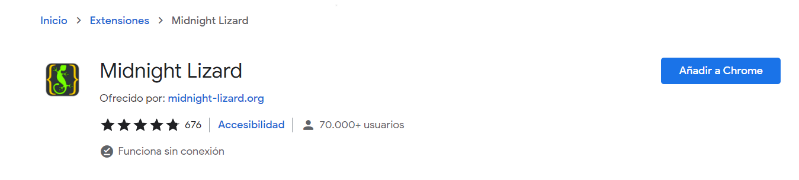
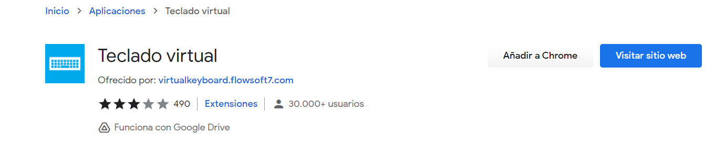

1 TIPOS DE USUARIO.
La mitad de los usuarios tienen algún tipo de problema o dificultad para poder acceder a las aplicaciones o a la web. La WAI es la iniciativa de usabilidad de la Web promovida por el consorcio web, y pretende ofrecer una guía estándar para todos los desarrolladores de navegadores, webs y herramientas.
Tipos de perfiles:
- Comprador online daltonico.
El daltonismo o ceguera en colores ocurre cuando un usuario no es capaz de distinguir colores como el rojo y verde o azul y amarillo. Eso supone, que si un usuario no ve correctamente los colores, es posible que no sea capaz de ver bien todo el contenido de la web.
La solucion seria usar colores que contrasten (cómo por ejemplo el amarillo y el azul) usando una hoja de estilos externa para que el usuario pueda alterar los colores. Midnight Lizard es una herramienta que se instala en el navegador y nos permite cambiar los colores de una web.
- Periodista o reportero con discapacidad de manos.
La discapacidad de manos supone desde una descoordinación motora de los dedos, manos o brazos o ausencia de ellos. Normalmente este tipo de usuarios suelen usar un ratón especial y un sistema de reconocimiento por voz.
Para solucionar este problema podemos usar un teclado en pantalla y además facilitar al usuario Access Keys (atajos de teclado), para acceder a las secciones de la web de forma fácil y rápida.
- Estudiante sordo online.
Una persona sorda no es capaz de escuchar los sonidos que suceden a su alrededor. Eso a la hora de navegar por una web, solo le afectan los contenidos multimedia.
La mejor solución para este tipo de usuarios es proporcionar subtítulos a todos los vídeos de nuestro sitio web.
- Jubilado.
Una persona jubilada, es una persona que poco a poco va perdiendo cualidades (la vista, la destreza, la atención, el oído e incluso la memoria).
Para solucionar este problema, a la hora de diseñar las interfaces web, debemos de tener en cuenta el uso de interfaces sin movimiento, con textos e imágenes a buena escala.
- Salud y Edad.
La salud y la edad tambien puede ser un impedimento, se pueden tener problemas de aguante, de concentración o destreza. Ya no es el hecho de tener una discapacidad, sino estar fatigado o dolorido. Por ejemplo, un administrativo sin discapacidad, pero sufre de migrañas (dolores de cabeza), y eso hará que haya días que no rinda al máximo en el trabajo.